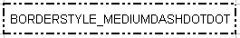
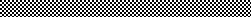
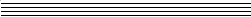

Format class reference
-
Font* font() const 返回当前字体的指针。如果发生错误则返回 NULL。
使用 Book::errorMessage() 获取错误信息。 - bool setFont(Font* font)
-
int numFormat() const 返回数字格式标识符。
-
void setNumFormat(int numFormat)
设置数字格式标识符。该标识符必须是有效的内置数字格式标识符或自定义数字格式的标识符。
要创建自定义格式，请使用 Book::addCustomNumFormat()。
请看下表的内置值：常量 描述 范例 NUMFORMAT_GENERAL 常规格式 NUMFORMAT_NUMBER 普通数值 1000 NUMFORMAT_NUMBER_D2 小数点 1000.00 NUMFORMAT_NUMBER_SEP 千位数 100,000 NUMFORMAT_NUMBER_SEP_D2 小数点和千位数 100,000.00 NUMFORMAT_CURRENCY_NEGBRA 币值，括号里为负数 (1000$) NUMFORMAT_CURRENCY_NEGBRARED 币值，负数在括号内为红色。 (1000$) NUMFORMAT_CURRENCY_D2_NEGBRA 小数点，括号内为负值 ($1000.00) NUMFORMAT_CURRENCY_D2_NEGBRARED 小数点的货币价值，负数在括号里是红色的。 ($1000.00) NUMFORMAT_PERCENT 百分比值，将单元格值乘以100。 75% NUMFORMAT_PERCENT_D2 带小数点的百分比值，将单元格值乘以100。 75.00% NUMFORMAT_SCIENTIFIC_D2 带 E 字头的科学值和小数点 10.00E+1 NUMFORMAT_FRACTION_ONEDIG 分数值，一位 10 1/2 NUMFORMAT_FRACTION_TWODIG 分数值，二位 10 23/95 NUMFORMAT_DATE 日期值，取决于系统的设置 3/11/2009 NUMFORMAT_CUSTOM_D_MON_YY 自定义日期值 11-Mar-09 NUMFORMAT_CUSTOM_D_MON 自定义日期值 11-Mar NUMFORMAT_CUSTOM_MON_YY 自定义日期值 Mar-09 NUMFORMAT_CUSTOM_HMM_AM 自定义日期值 8:30 AM NUMFORMAT_CUSTOM_HMMSS_AM 自定义日期值 8:30:00 AM NUMFORMAT_CUSTOM_HMM 自定义日期值 8:30 NUMFORMAT_CUSTOM_HMMSS 自定义日期值 8:30:00 NUMFORMAT_CUSTOM_MDYYYY_HMM 自定义日期值 3/11/2009 8:30 NUMFORMAT_NUMBER_SEP_NEGBRA 千位数，括号内为负数。 (4,000) NUMFORMAT_NUMBER_SEP_NEGBRARED 千位数带分隔符，负数在括号里是红色的。 (4,000) NUMFORMAT_NUMBER_D2_SEP_NEGBRA 小数点和千位数，括号内为负数。 (4,000.00) NUMFORMAT_NUMBER_D2_SEP_NEGBRARED 千位数带小数点，负数在括号里是红色的。 (4,000.00) NUMFORMAT_ACCOUNT 金额 5,000 NUMFORMAT_ACCOUNTCUR 金额与货币符号 $ 5,000 NUMFORMAT_ACCOUNT_D2 金额带小数点 5,000.00 NUMFORMAT_ACCOUNT_D2_CUR 金额与货币符号，带小数点 $ 5,000.00 NUMFORMAT_CUSTOM_MMSS 自定义时间值 30:55 NUMFORMAT_CUSTOM_H0MMSS 自定义时间值 20:30:55 NUMFORMAT_CUSTOM_MMSS0 自定义时间值 30:55.0 NUMFORMAT_CUSTOM_000P0E_PLUS0 自定义值 15.2E+3 NUMFORMAT_TEXT 文本值 any text -
AlignH alignH() const
返回水平对齐方式。
-
void setAlignH(AlignH align)
设置水平对齐方式。
水平对齐值 视图 ALIGNH_GENERAL ALIGNH_LEFT ALIGNH_CENTER 
ALIGNH_RIGHT ALIGNH_FILL ALIGNH_JUSTIFY ALIGNH_MERGE ALIGNH_DISTRIBUTED -
AlignV alignV() const
返回垂直对齐方式。
-
void setAlignV(AlignV align)
设置垂直对齐方式。
垂直对齐值 视图 ALIGNV_TOP ALIGNV_CENTER ALIGNV_BOTTOM ALIGNV_JUSTIFY ALIGNV_DISTRIBUTED -
bool wrap() const 返回单元格文本是否被包裹。
-
void setWrap(bool wrap = true) 设置单元格文字是否被包裹的标志。
-
int rotation() const
返回文本的旋转角度。
-
bool setRotation(int rotation)
设置文本旋转。必须是下表中的一个值：
值 含义 0 - 90 文字逆时针旋转0至90度 91 - 180 文本顺时针旋转1至90度 255 纵向文本 -
int indent() const 返回文本的缩进程度。
-
void setIndent(int indent) 设置文本缩进程度。必须小于或等于15。
-
bool shrinkToFit() const 返回单元格是否收缩到合适的位置。
-
void setShrinkToFit(bool shrinkToFit = true) 设置单元格是否收缩到合适的标志。
-
void setBorder(BorderStyle style = BORDERSTYLE_THIN)
设置边框样式。
边框样式值 视图 BORDERSTYLE_NONE BORDERSTYLE_THIN BORDERSTYLE_MEDIUM 
BORDERSTYLE_DASHED 
BORDERSTYLE_DOTTED 
BORDERSTYLE_THICK BORDERSTYLE_DOUBLE 
BORDERSTYLE_HAIR 
BORDERSTYLE_MEDIUMDASHED 
BORDERSTYLE_DASHDOT 
BORDERSTYLE_MEDIUMDASHDOT BORDERSTYLE_DASHDOTDOT 
BORDERSTYLE_MEDIUMDASHDOTDOT  BORDERSTYLE_SLANTDASHDOT 
-
void setBorderColor(Color color) 设置边框 color.
-
BorderStyle borderLeft() const 返回左 border style。
-
void setBorderLeft(BorderStyle style = BORDERSTYLE_THIN) 设置左 border style。
-
BorderStyle borderRight() const 返回右 border style。
-
void setBorderRight(BorderStyle style = BORDERSTYLE_THIN) 设置右 border style。
-
BorderStyle borderTop() const 返回上 border style。
-
void setBorderTop(BorderStyle style = BORDERSTYLE_THIN) 设置上 border style。
-
BorderStyle borderBottom() const 返回下 border style。
-
void setBorderBottom(BorderStyle style = BORDERSTYLE_THIN) 设置下 border style。
-
Color borderLeftColor() const 返回左边框的 color。
-
void setBorderLeftColor(Color color) 设置左边框的 color。
-
Color borderRightColor() const 返回右边框的 color。
-
void setBorderRightColor(Color color) 设置右边框的 color。
-
Color borderTopColor() const 返回上边框的 color。
-
void setBorderTopColor(Color color) 设置上边框的 color。
-
Color borderBottomColor() const 返回下边框的 color。
-
void setBorderBottomColor(Color color) 设置下边框的 color。
-
BorderDiagonal borderDiagonal() const
返回对角线的边框。
- void setBorderDiagonal(BorderDiagonal border)
-
BorderStyle borderDiagonalStyle() const 返回对角线边框 style。
-
void setBorderDiagonalStyle(BorderStyle style)
设置对角线边框 style。
-
Color borderDiagonalColor() const
返回对角线边框 color。
-
void setBorderDiagonalColor(Color color)
设置对角线边框 color。
-
FillPattern fillPattern() const
返回填充样式。
-
void setFillPattern(FillPattern pattern)
设置填充样式。
填充样式值 视图 FILLPATTERN_NONE FILLPATTERN_SOLID FILLPATTERN_GRAY50 
FILLPATTERN_GRAY75 
FILLPATTERN_GRAY25 FILLPATTERN_HORSTRIPE 
FILLPATTERN_VERSTRIPE 
FILLPATTERN_REVDIAGSTRIPE 
FILLPATTERN_DIAGSTIPE FILLPATTERN_DIAGCROSSHATCH  FILLPATTERN_THICKDIAGCROSSHATCH 
FILLPATTERN_THINHORSTRIPE  FILLPATTERN_THINVERSTRIPE 
FILLPATTERN_THINREVDIAGSTRIPE 
FILLPATTERN_THINDIAGSTRIPE FILLPATTERN_THINHORCROSSHATCH 
FILLPATTERN_THINDIAGCROSSHATCH 
FILLPATTERN_GRAY12P5 
FILLPATTERN_GRAY6P25 
-
Color patternForegroundColor() const 返回填充图案的前景 color。
-
void setPatternForegroundColor(Color color) 设置填充图案的前景 color。
-
Color patternBackgroundColor() const 返回填充图案的背景 color。
-
void setPatternBackgroundColor(Color color) 设置填充图案的背景 color。
-
bool locked() const 返回锁定保护属性是否设置为 "true"。
-
void setLocked(bool locked = true) 设置锁定的保护属性。Sheet::setProtect() 方法保护工作表时使用。
如果"locked"为 false，即使工作表受保护，用户也可以更改单元格的格式。 -
bool hidden() const 返回隐藏保护属性是否设置为 "true"。
-
void setHidden(bool hidden = true) 设置隐藏保护属性。